U ovoj vježbi smo napravili vlastiti font u programu FontForge i isprobali ga u Wordu i Inkscape-u.
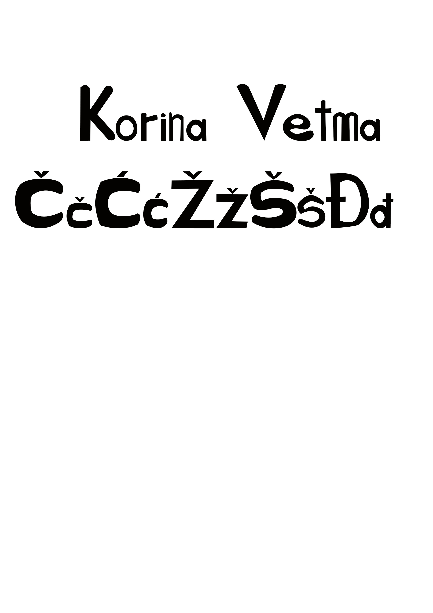U ovoj vježbi smo u Gimp-u nacrtali Bezierove krivulje u koordinatnom sustavu te ih uklopili u naš font.
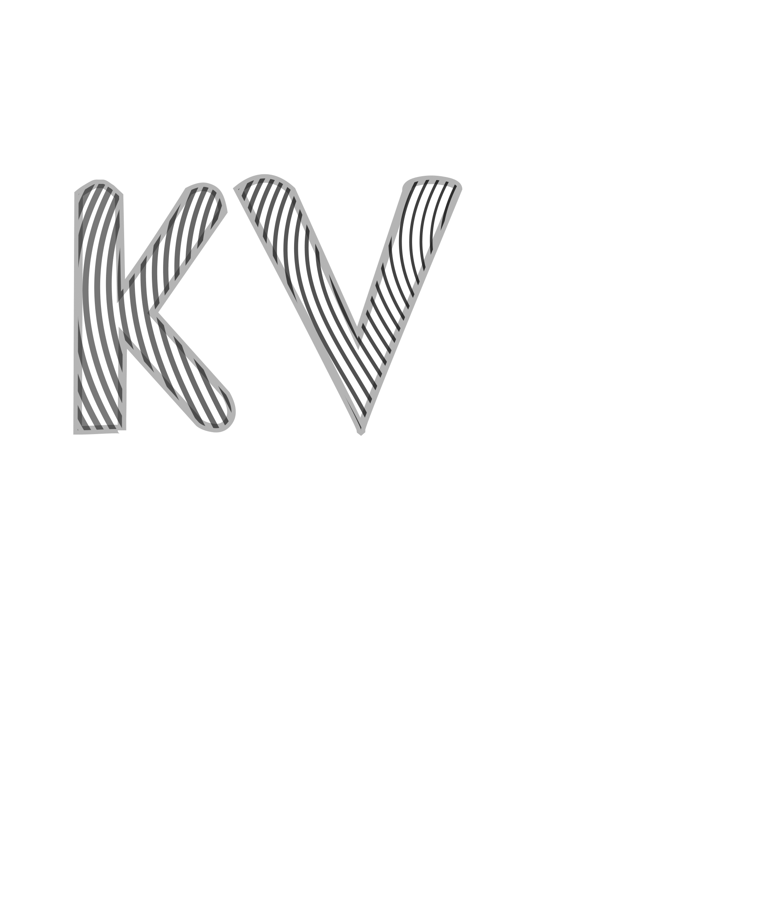U ovoj vježbi smo isto tako u Gimp-u, crtali slobodne vektorske okvire prema odabranom predlošku kako bi napravili vlastitu sliku.
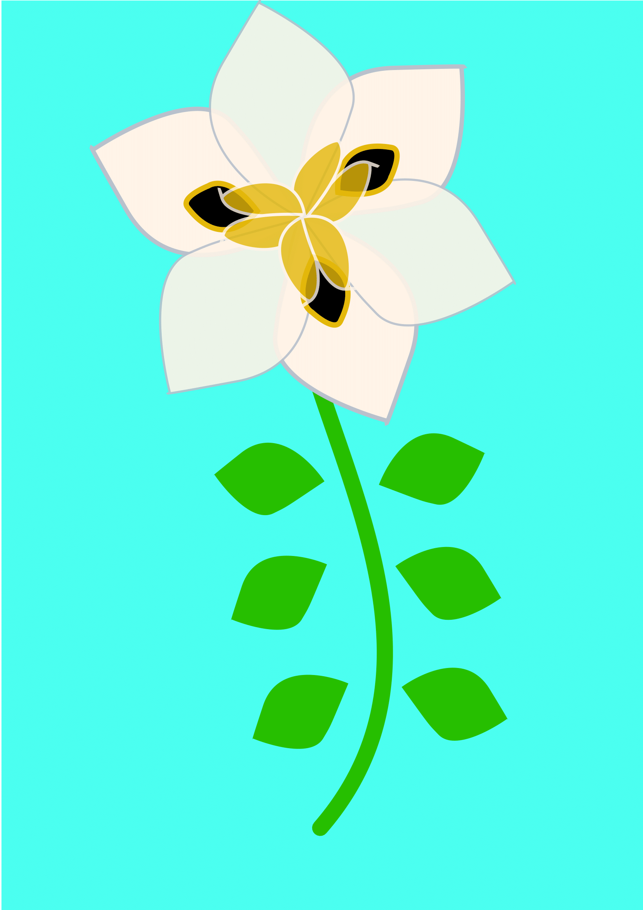 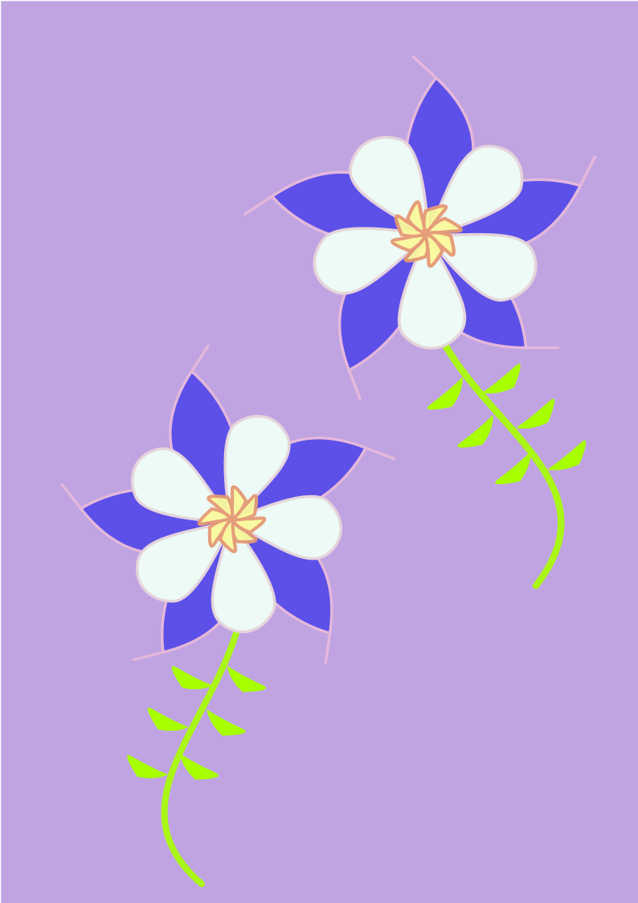U ovoj vježbi smo koristili razne tehnike spajanja i izrezivanja objekata te gradijente i transparenciju.
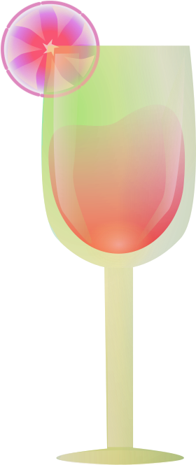U projektnom zadatku smo koristili sve tehnike koje smo naučili u prošlim vježbama.
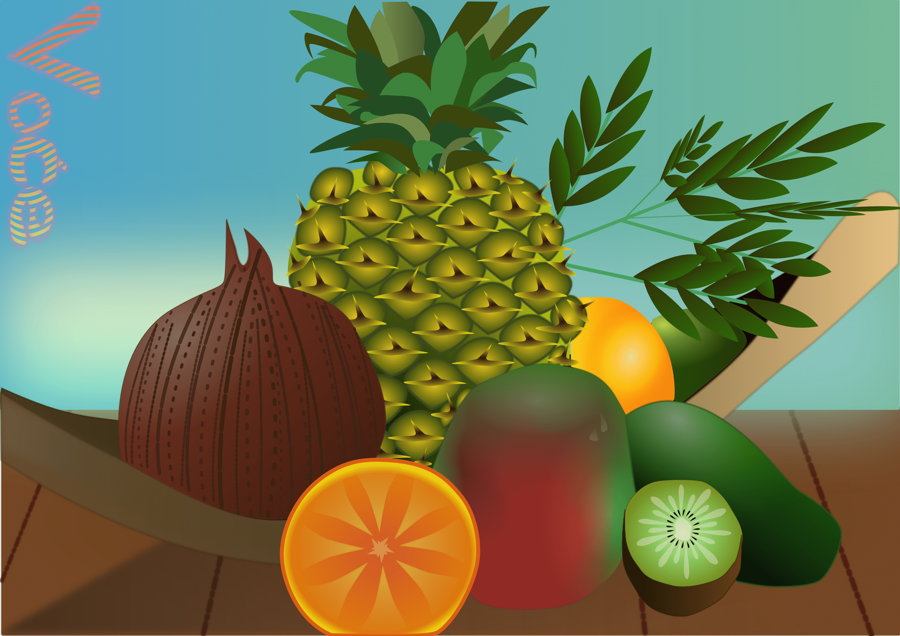U ovoj vježbi smo retuširali fotografije u Photoshopu.
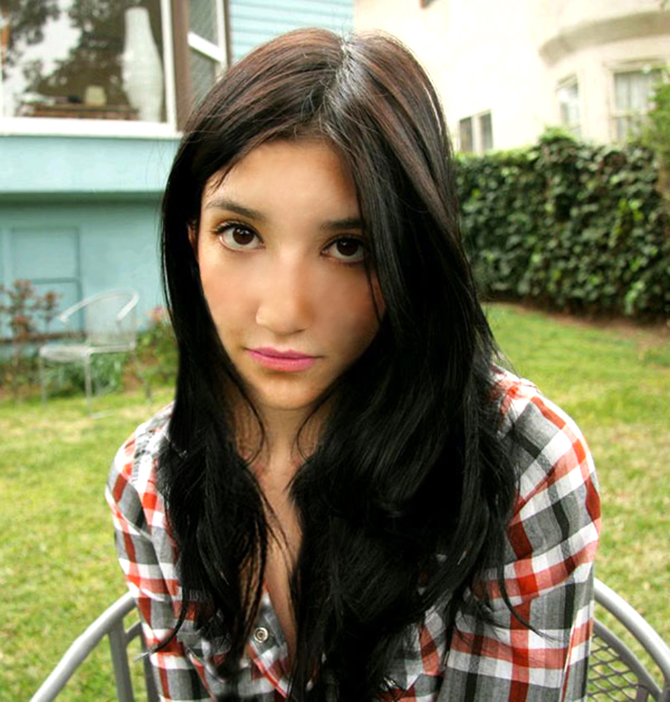
U ovoj vježbi smo kolorirali crno-bijele slike te se bavili maskama i selekcijom u Photoshopu.
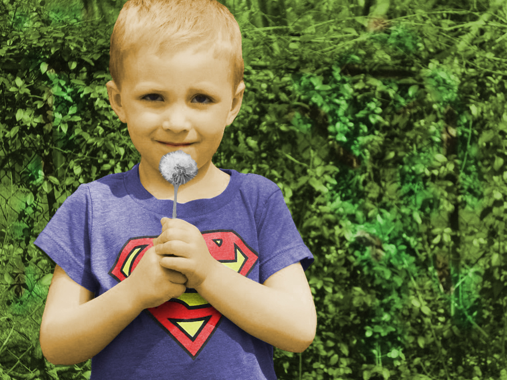 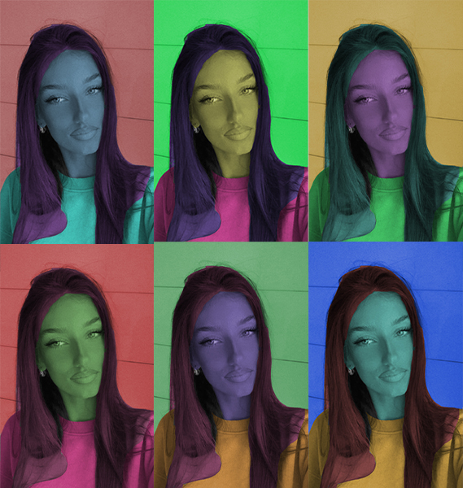U ovoj vježbi smo se bavili fotomontažom i izrezivanjem elemenata iz različitih slika te njihovim spajanjem u Photoshopu.
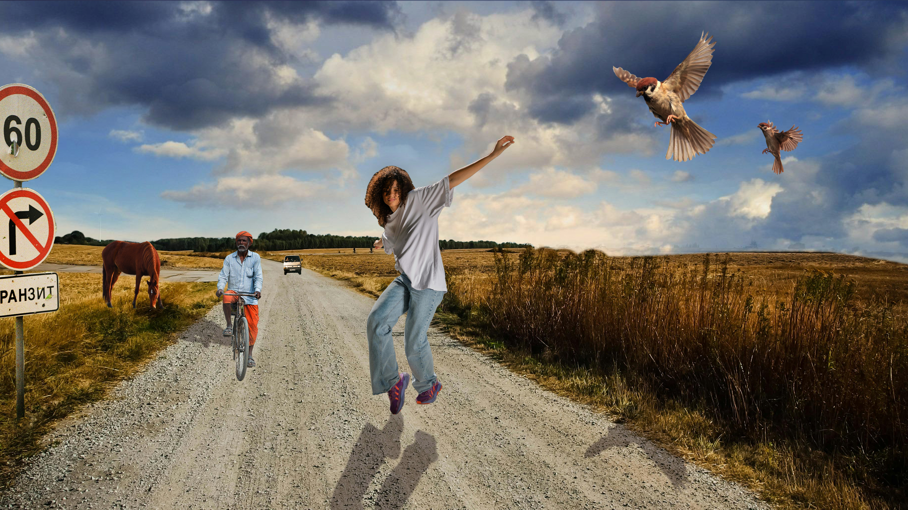U projektnom zadatku smo kombinirali sve tehnike iz prethodnih vježbi.
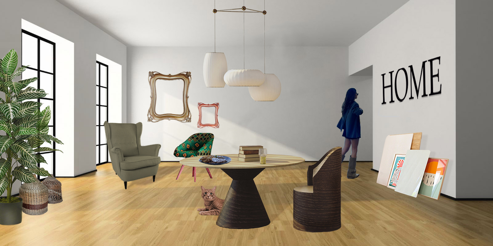Obrađivali smo videomaterijale i kao rezultat dobili kinemagraf, u programu Shotcut.


U ovoj vježbi smo rezali i spajali više videa te dodavali razne efekte i tekst.